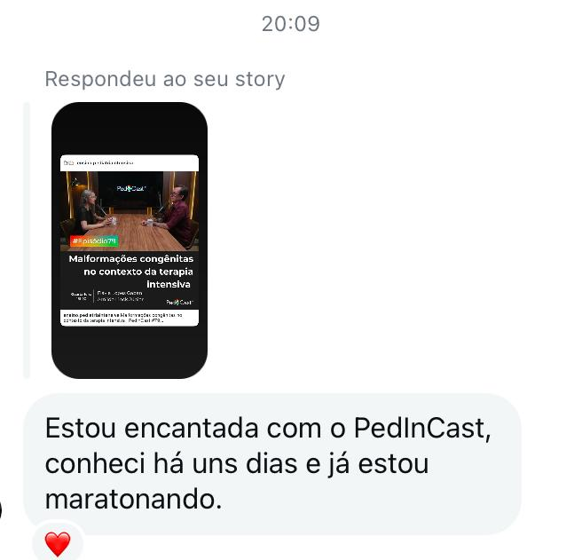
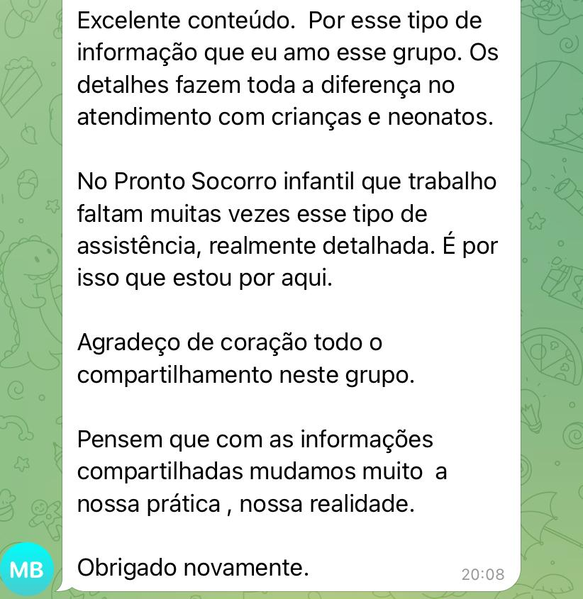
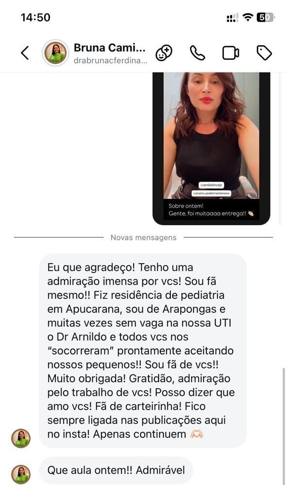
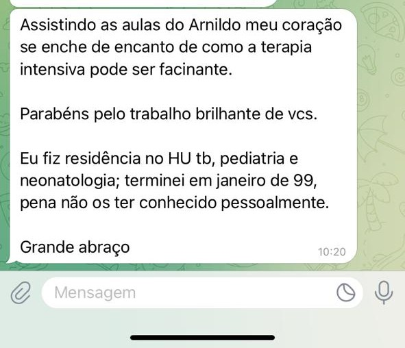
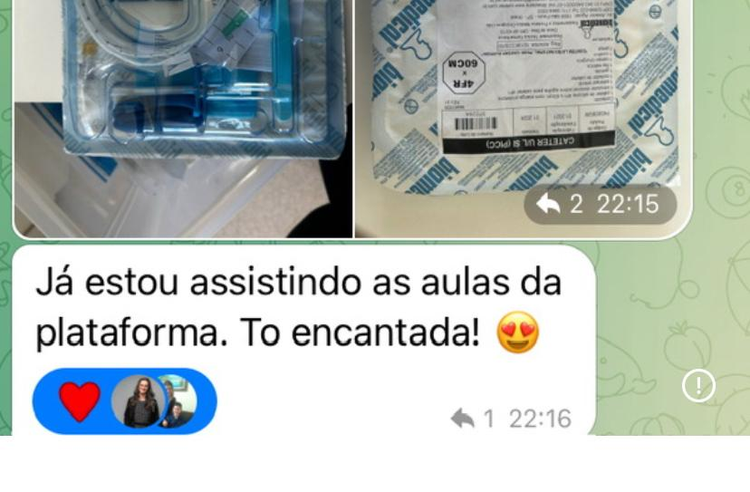

Plataforma dinâmica e com mais de 100 horas de conteúdos para você que gosta de organização.
Perca o medo de atender crianças graves com uma visão prática e segura
A maior plataforma sobre intensivismo pediátrico está aqui. Faça parte da nossa comunidade e tenha acesso a conhecimentos valiosos sobre a especialidade. Você não será o mesmo depois dessa jornada.
Garantia de 7 dias
Tira-dúvidas
Assinatura anual
Acesso imediato
O que você ganha com o PedIn
Conteúdo objetivo, aplicável e baseado em evidências para a condução da criança grave.
O PedIn foi pensado para médicos que querem segurança na condução da criança grave, com uma abordagem prática, embasada nas melhores evidências e com foco em decisões clínicas do dia a dia.
Você terá acesso a aulas em alta resolução, artigos científicos selecionados e disponibilizados na íntegra.
Faça parte da comunidade e evolua sua prática clínica.
Confira os principais módulos do PedIn
Estruturado por áreas, com conteúdos diretos ao ponto para consulta e estudo.
- Legislação e escore prognóstico
- Impressão inicial, avaliação primária e secundária
- Exame físico da criança grave: por onde começar?
- Admissão: traumatismo cranioencefálico
- Admissão: gastrosquise
- Receptores adrenérgicos e aplicabilidade clínica
- Choque vasodilatatório
- Choque cardiogênico
- Choque séptico
- Choque medular
- Emergências hipertensivas
- Como iniciar os fármacos vasoativos
- Reanimação cardiopulmonar novas diretrizes 2025
- Reanimação presenciada pelos pais
- Coagulação Intravascular Disseminada
- Anticoagulação
- Sistemas ABO e Rh
- Transfusão de hemocomponentes
- Reações transfusionais
- Bronquiolite
- Síndrome do Desconforto Respiratório Agudo (SDRA/PARDS) Pediátrico
- Síndrome Respiratória Aguda Grave (SRAG)
- Caso clínico: PARDS e Asma grave da UTI pediátrica
- Intubação traqueal
- Desafios da via área pediátrica
- Ventilação pulmonar mecânica
- Retirada da ventilação pulmonar mecânica
- Analgésicos e sedativos utilizados em neonatologia e pediatria
- Delirium
- Abstinência
- Dor da criança
- Rodízio e retirada dos fármacos
- Sepse
- Dengue
- Infecções fúngicas em UTI pediátrica
- Pneumonias comunitárias
- Pneumonia associada à ventilação mecânica
- Infecção de corrente sanguínea
- Meningites
- Infecção por CR/PR
- Profilaxia cirúrgica
- Bundle de prevenção de PAV
- Anatomia e fisiologia do SNC aplicada à prática
- Traumatismo crânioencefálico
- Calculando solução salina hipertônica
- Queimaduras
- Afogamento
- Criança politraumatizada
- Mal epiléptico
- Estado de mal epiléptico super refratário
- Morte encefálica
- Doação de órgãos
- Distúrbios do potássio
- Hipocalemia – Cálculo de reposição
- Distúrbios do sódio
- Cálculos – Correção da Hiponatremia
- Cálculos – Correção da Hipernatremia
- Sobrecarga hídrica
- Introdução à Injúria renal aguda
- Suporte renal artificial extracorpóreo
- Escolha da modalidade de diálise
- Injúria renal aguda e terapia de substituição renal
- Cetoacidose
- Abordagem da criança intoxicada
- Acidente com animais peçonhentos em crianças
- Atresia de esôfago
- Cardiopatias congênitas
- Pós-operatório de cirurgia cardíaca
- Enterocolite
- Pressão Intra-abdominal
- Pressão intracraniana pela DVE
- Pressão arterial invasiva
- PAI: montagem do sistema (Domus)
- Neurointensivismo / Neuromonitorização
- Sinais vitais
- Exames laboratoriais e de imagem
- Gasometria
- Radiografia de tórax
- Radiografia de abdome
- Nutrição: síndrome da realimentação
- Conduzindo a nutrição da criança crítica
- Nutrição parenteral: como prescrever
- Tipos de dispositivos vasculares
- Cateterismo umbilical
- Desobstrução de dispositivos vasculares
- Manobra de desobstrução de cateter
- PICC: cortar ou não o cateter
- Bônus 1: Cálculo de medicamentos contínuos (Adrenalina, Dobutamina, Milrinona, Nitroprussiato, Noradrenalina, Vasopressina, Cetamina, Clonidina, Dexmedetomidina, Fentanil, Lidocaína, Midazolam, Propofol, Remifentanil, Sufentanil, Tionembutal, Insulina, Salbutamol, Terbutalina, Rocurônio, Soro de manutenção)
- Bônus 2: Protocolos e FlashCards (Intubação traqueal, PO atresia de esôfago, prevenção de PAV, rodízio de analgosedação, monitorização PIA, RCP pediátrica, parâmetros de sinais vitais, FlashCards de sinais vitais e RCP)
- Bônus 3: Humanização e fundamentos (Cuidado centrado na família, comunicação de más notícias, cuidados paliativos, declaração de óbito, pesquisa científica e estudos epidemiológicos)
- Bônus 4: Mais de 100 episódios PedInCasts categorizados (1ª, 2ª e 3ª temporadas)
Acesse agora todas as aulas.
Assinatura anual
De R$ 4.997,00 por apenas: R$ 1.997,00 à vista ou parcelado em até 12x com juros (Sujeito a juros da plataforma)
O que você recebe
- Plataforma dinâmica e com mais de 100 horas de conteúdos
- Aulas objetivas e direcionadas à prática assistencial
- Evidências científicas robustas nacionais e internacionais
- Artigos científicos atualizados e disponibilizados na íntegra
- Vídeos em alta resolução e qualidade sonora
Benefícios
Tudo pensado para te dar clareza, segurança e consistência.
Aulas objetivas e direcionadas à prática assistencial para caber em qualquer rotina.
Evidências científicas robustas nacionais e internacionais, pormenorizadas nas aulas.
Artigos científicos atualizados e de alto impacto para cada tema abordado, disponibilizados na íntegra.
Vídeos em alta resolução e qualidade sonora.
Acesso anual com atualizações.
Resultados reais na condução da criança grave
Depoimentos de alunos do PedIn. Prints reais, sem roteiro, só prática aplicada.





Garantia de 7 dias
Nós confiamos no processo e oferecemos garantia. Você não precisa se comprometer financeiramente, caso não se identificar com as aulas nos primeiros 7 dias, você poderá acionar a plataforma e nós devolveremos todo o seu dinheiro.
Dúvidas frequentes
Respostas objetivas para você decidir com segurança.
Você terá acesso à plataforma PedIn por um ano. O acesso é imediatamente liberado após a confirmação da sua inscrição. As dúvidas podem ser tiradas na própria plataforma.
A plataforma de aulas estará disponível na Kiwify, uma plataforma digital 100% segura e confiável.
O acesso ao curso é enviado no e-mail cadastrado no momento da sua inscrição. Após a confirmação de pagamento você recebe um e-mail da plataforma Kiwify com todos os dados de login e senha, assim como o link da plataforma para você acessar. Caso não esteja na caixa de entrada, é importante conferir em SPAM ou lixeira do seu e-mail.
O conteúdo é direcionado para equipe médica, mas temos abordagens multiprofissionais. Dessa forma, todos os profissionais da saúde que queiram aprofundar seu conhecimento sobre condução e assistência à criança grave, principalmente no ambiente de terapia intensiva são bem-vindos.
As assinaturas realizadas por cartão de crédito são renovadas automaticamente. Para evitar que isso aconteça o cliente deve solicitar o cancelamento antes da renovação. Um e-mail de lembrete de renovação é enviado pela equipe da Kiwify, para o e-mail cadastrado, 7 dias antes da data da renovação para essa ação, caso seja do interesse do aluno. Diferente do cartão de crédito, no caso de assinaturas no boleto e pix, a renovação da assinatura deve ser feita manualmente na data de vencimento.
Sim. O PedIn possui a garantia incondicional de 07 dias. Você tem esse período para testar todo o conteúdo da plataforma. Caso você queira solicitar reembolso nesse período de 07 dias, nós devolvemos 100% do seu dinheiro. O cancelamento apenas impede a renovação automática.
Sim. Você pode assistir pelo computador, tablet, celular e também pela sua TV.
O PedIn possui ampla atuação nas redes sociais que podem ser encontradas nos sinalizadores abaixo. Além do Instagram, estamos no YouTube, Spotify e TikTok. Também temos um Telegram, onde compartilhamos referências bibliográficas de qualidade para mais de 4 mil pessoas.